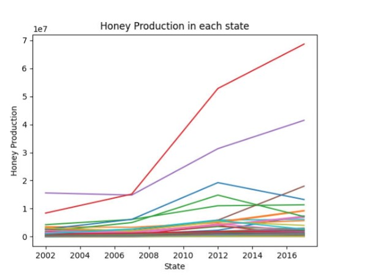
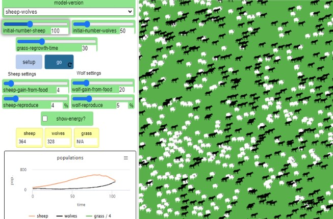
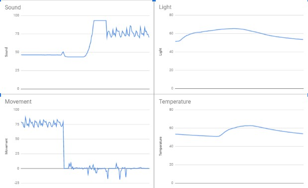
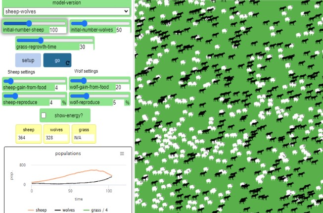
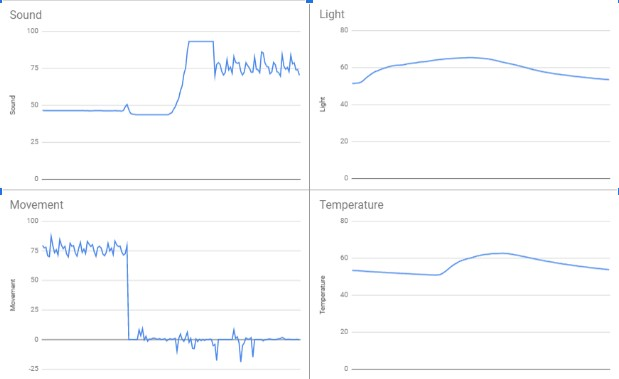
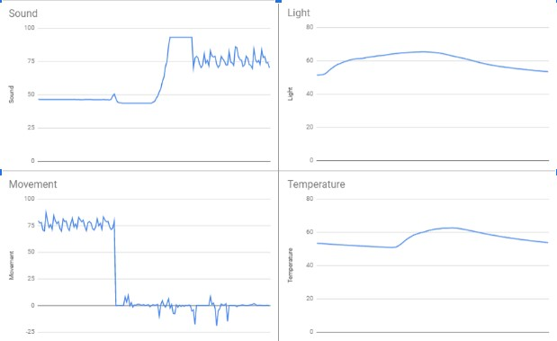

This is my Portfolio Page!


1.1.9 Rock, Paper, Scissor Project: User plays against AI.

1.2.9 Project: We made fruit ninja, the user slices fruits and tries to avoid bombs in order to score while there is a 30 second timer

1.3.1 Scratch Project: We recreated the show Hell's Kitchen into a scratch game, where the user is a chef in Gordan Ramsay's kitchen making pizza.

3.2.4 Project: Honey Production in each State Graph. My partners were Angeli and David,
and we created a graph depicting the honey production levels.

4.1.4 Project: Sheep and Wolf Predation. We used NetLOGO to simulate the relationship between sheep and wolves. We concluded
that there is a direct correlation between wolves and sheep.

3.1.6 Project: My partners were Angeli Sundar and David Jeon. In this porject we learned how to anaylyze data based on the four
senses of the rover, light, temperature, sound, and angular velocity, to pinpoint its location.

4.1.4 Project: Sheep and Wolf Predation. We used NetLOGO to simulate the relationship between sheep and wolves. We concluded
that there is a direct correlation between wolves and sheep.

3.1.6 Project: My partners were Angeli Sundar and David Jeon. In this porject we learned how to anaylyze data based on the four
senses of the rover, light, temperature, sound, and angular velocity, to pinpoint its location.
